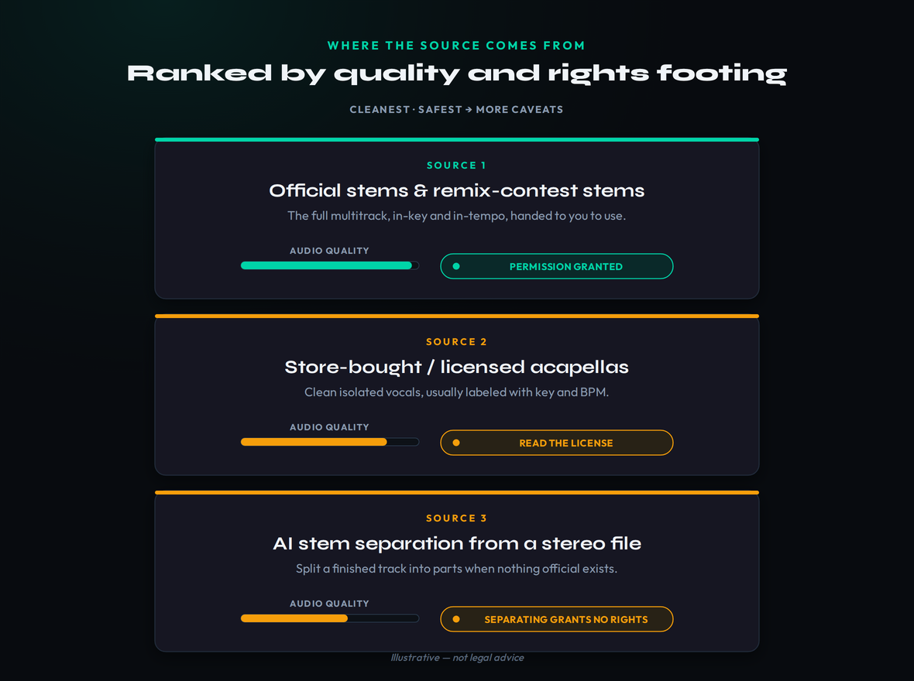
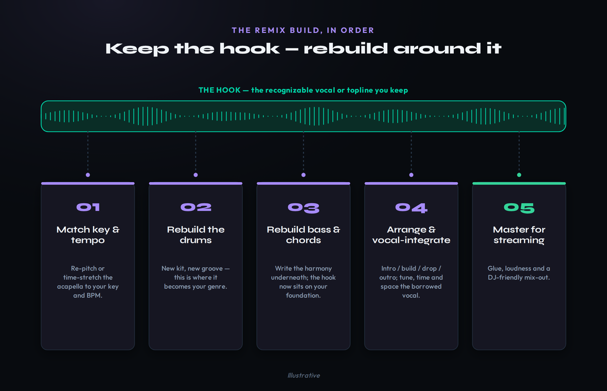

There is a song you love, and somewhere in the back of your head you can already hear your version of it — the vocal floating over your drums, your chords, your genre. That instinct is the start of every great remix. The gap between the instinct and a finished record is where most people get stuck, and it is two separate problems wearing one coat. The first is craft: how to get the parts, match them to your track, keep the thing everyone recognizes, and rebuild everything else in your own sound. The second is rights: when you are actually allowed to put the result out, when you are not, and how official remixes, stems and contests really work. Most tutorials solve half of one of those and leave you with a clever edit you are afraid to release. This guide does the whole job — the build that sounds professional, and the honest map of where it can go afterwards.
This article links to MPW guides and tools and to third-party platforms, some of which are affiliate links. If you sign up through one we may earn a commission at no cost to you. It changes nothing about the method — the workflow and the honest caveats below are reported as they are, click or not.
To make a remix: get the source parts (official remix-pack stems or contest stems are best; a licensed acapella next; AI stem-separation from a stereo file as a fallback), match key and tempo to your track, keep the recognizable hook and rebuild everything else — new drums, bass, chords and arrangement in your genre — then integrate the borrowed vocal, arrange it so it builds, and master it. Whether you can release it is a separate question: an official or licensed remix can go out through a distributor, while a “bootleg” you made without permission generally stays promo-only until you clear it. This piece is general information, not legal advice — the rights specifics live in our linked clearance and licensing guides.
One honesty note before the detail. The craft side of this guide is evergreen — the moves are the same whether you remix a 2010 indie track or last week’s number one. The rights side is genuinely unsettled and varies by song, territory and the deal behind it, so this piece deliberately does not hand you a single “you can” or “you can’t” rule. It frames the landscape honestly and points you to the dedicated pages for the specifics. The named platforms and their terms were re-checked when this was written; confirm anything money- or release-related against the current source before you act on it.
What a Remix Actually Is — Official vs Bootleg
A remix is not an edit and it is not a cover. An edit rearranges the original recording — you are still playing the master back, just chopped and looped. A cover re-records the song with new performers, which is a different rights regime entirely and one we treat on its own in how to release a cover song. A remix sits between them: you take one or more recognizable elements of the original recording — almost always the vocal or topline — and you build a substantially new instrumental and arrangement around it. The recognizable element is what makes it a remix rather than an original track; everything you put around it is what makes it yours rather than a rip. Get that balance wrong in either direction and the result fails: keep too little of the original and nobody knows what they are listening to; keep too much and you have made a glorified edit with none of your own fingerprint on it.
The word that decides almost everything downstream is “official.” An official remix is one you were invited or licensed to make: a label sent you the stems, you won or entered a remix contest, or you obtained a remix license directly. With an official remix, permission travels with the parts — the whole point of being handed the stems is that you are allowed to use them for this. A bootleg (sometimes called an unofficial remix) is one you made on your own initiative from a track you have no permission to use. The bootleg can sound every bit as good; the difference is purely about rights, not quality. Producers build bootlegs constantly — they are how you build a catalog, get noticed and prove you can do the work — but a bootleg lives in a different release world to an official remix, and pretending otherwise is how tracks get pulled and channels get strikes.
Hold those two definitions in your head as you read the craft sections, because the build is identical either way. You separate, match, keep the hook, rebuild, arrange and master the same whether you are remixing your own catalog, a Creative-Commons acapella, a contest you entered, or a song you simply love. The craft does not care where the parts came from. The release question cares enormously, which is why we treat the two halves separately: learn to build the record first, then look honestly at where it can go.
Get the Stems or Acapella — the Honest Source Hierarchy
Everything about how clean your remix sounds, and how cleanly you can release it, is decided before you open a plugin — at the moment you choose your source material. There is a clear hierarchy here, ranked by two things at once: audio quality and how solid your rights footing is. At the top sit official stems and remix-contest stems. These are the full multitrack, often already labeled with key and tempo, handed to you precisely so you can rework them. Platforms like Splice and SKIO run artist- and label-backed remix competitions where you grab the stems and, crucially, the permission to use them for that competition comes with them. This is the cleanest route on both axes: pristine parts and a clear reason you are allowed to touch them.
One rung down are store-bought or licensed acapellas — clean isolated vocals sold or licensed for production use, usually tagged with key and BPM so they drop straight into a session. The audio quality is high. The catch is a subtle one that trips up a lot of producers: buying or downloading an acapella is not the same as owning the right to release a commercial remix built on it. Some acapella licenses explicitly permit remixing and even release; others are for personal or non-commercial use only. The file is just a file; the license is the thing that tells you what you may do with it, so read it before you build something you intend to put out. We unpack how these terms actually read in music licensing explained and the related beat licensing explained.

At the bottom of the hierarchy — not because it is bad, but because it carries the most caveats — is AI stem separation: feeding a finished stereo track into a separation tool to pull out an approximate vocal, drums, bass and music. This is the fallback when nothing official exists, and modern separators are genuinely impressive, but be honest about the two costs. The audio cost is artifacts: bleed between parts, a slightly watery quality on reverb tails and cymbals, and pitch wobble on isolated vocals. We cover how clean the splits actually get, and how to clean them up further, in our AI stem separation guide. The rights cost is the one people forget: separating a song into parts does not give you any right to release those parts. You have simply pulled apart a copyrighted recording. The cleaner the source on this hierarchy, the less work you do later and the fewer questions you face at release — so start as high up it as you honestly can. If your stems arrive without metadata, identify the key and BPM yourself before you do anything else.
Match Tempo & Key
With your source in hand, the first technical job is to make it fit your track — and that means tempo and key, in that order. Tempo is the easier of the two conceptually but the one that does the most audible damage if you rush it. If the acapella was recorded at 120 BPM and your remix lives at 174, you are asking the software to stretch the vocal by a huge ratio, and every time-stretching algorithm trades artifacts for that. Small stretches of a few BPM are essentially transparent; large ones smear transients and add a metallic, “underwater” quality, especially on consonants and breaths. The practical move is to choose a target tempo that keeps the stretch ratio sane, and to know your DAW’s warp modes — a complex or polyphonic mode for full vocals, a simpler mode for monophonic or percussive material. When a stretch is too extreme to sound clean, the honest answer is often to halve or double your remix tempo so the vocal can sit at a comfortable ratio.
Key is where remixes are quietly made or broken. The borrowed vocal carries a melody in a specific key, and your new chords have to agree with it or the whole thing sounds sour in a way listeners feel even if they cannot name it. You have two levers. You can pitch-shift the vocal to your key, accepting that large shifts thin out or chipmunk the voice; or you can write your chord progression in the vocal’s key and build around it, which keeps the voice untouched and natural. Most strong remixes do the second wherever possible: respect the vocal’s key and let your harmony serve it. A chord and key reference and a tempo, key and chord reference make the matching mechanical rather than guesswork, and our guide to writing melody helps when you want to add counter-lines under the borrowed topline.
If the source arrives without a key label, you can find it quickly by ear. Loop a sustained, unprocessed note — the end of a held word in the chorus is ideal — match it against a piano or tuner, then test whether the song resolves to the major or the relative minor of that pitch. Trust your ear over an automatic key-detection plugin, which a busy mix easily fools. When you pitch the vocal rather than write around it, every semitone of shift drags the formants with it, so moves beyond two or three semitones audibly change the singer’s character; a formant-correction mode buys a little room before the voice stops sounding human.
A useful discipline here is to commit to your target key and tempo before you write a single new part. Producers who leave both floating end up with a vocal pitched to one place, a bassline written to another, and a drum loop that fights the warp markers — an afternoon lost to a problem that a five-minute decision at the start would have prevented. Set the tempo, fix the key, get the borrowed part sitting cleanly in both, bounce that as your foundation, and only then start building. The discipline feels slow and is in fact the fastest path to a remix that grooves instead of wobbles.
Keep the Hook, Rebuild the Rest
This is the core craft move of the entire form, and it is worth stating as a rule: keep the one recognizable element, and rebuild everything else. The recognizable element is almost always the lead vocal or the topline — the part a listener would hum, the part that makes them say “oh, this is that song.” That is the thread you keep unbroken from the original. Everything underneath it — the drums, the bassline, the chords, the entire arrangement — you replace with your own. That replacement is not a step in the remix; it is the remix. It is the difference between a rework that announces a new producer and a karaoke edit that just swaps the drum sound.
Start the rebuild with drums, because the groove is what relocates the song into your genre faster than anything else. A new kit and a new rhythmic feel can move a downtempo ballad into a four-on-the-floor house record or a half-time future-bass flip without touching a note of the vocal. Then write the harmony underneath — the chords the vocal will now sit on. You are allowed, and often well advised, to reharmonize: the same melody over different chords can feel triumphant, melancholy or tense depending on what you put beneath it, and choosing fresh chords is one of the most expressive things a remix can do. Build the bass to lock with your new kick, give the low end the separation it needs, and suddenly the familiar voice is riding a completely new record.
One rebuild detail repays extra attention: low-end separation. Your new kick and your new bass both want the bottom octaves, and if they fight down there the whole record turns muddy. Carve them apart with a high-pass on the bass, complementary EQ where they overlap, and a gentle sidechain duck of the bass under each kick so both have their own moment — the fastest way to make a borrowed voice sound reborn, not merely relocated.

The picture above is the whole craft spine: the hook runs straight through, untouched, while every other lane gets rebuilt around it. Keeping that mental model stops the most common beginner mistake — treating the original instrumental as something to tweak rather than something to replace. If you find yourself EQing the original’s synths or trying to fit your kick around its drums, stop: you are editing, not remixing. Mute everything but the hook, and build up from silence in your own sound. The techniques here are ordinary production skills — if you can make a house track or any other genre from scratch, you already have everything you need to rebuild a remix; you are simply doing it with a borrowed topline as your north star. For chopping and re-pitching small recognizable fragments rather than a full vocal, the same logic in our how to chop samples and sample-flip guides applies.
Integrate the Borrowed Vocal
A borrowed vocal almost never drops in perfectly. It was recorded for a different track, at a different tempo, with different reverb and a different tonal balance, and your job is to make it sound like it was always meant to sit on your production. Start with timing. Once the vocal is at your tempo, nudge phrases so the syllables land with your new groove — a vocal that was laid back against the original drums can feel a hair late against a punchier kit, and a few milliseconds of alignment makes the difference between “borrowed” and “belongs.” If the original had heavy effects baked in, you will often want to tame them: subtractive EQ to pull out the worst of any clashing reverb, gentle de-essing if the source is harsh on top, and conservative compression to even out a performance that was mixed for a different context.
If you reharmonized underneath the vocal, give its tuning a second pass. A note that sat perfectly over the original’s chord can read slightly sour over your new one, and nudging a few sustained notes with a tuner — lightly, so the performance still breathes — relocks the borrowed melody to your harmony. When the vocal came from AI separation rather than a clean acapella, expect to do more repair: high-pass the low bleed, automate out drum spill in the gaps between phrases, and mask watery reverb tails with your own ambience rather than removing them outright. A little restorative EQ and careful gating turn a rough split into something that sits convincingly in the mix.
Tonally, treat the vocal as the most important element in the mix and carve space for it rather than fighting it. High-pass away rumble it does not need, find and cut any boxy or harsh frequencies, and use a touch of saturation or a presence lift to help it cut through your busier arrangement. Then place it in your space: a tempo-synced delay and a tasteful reverb tie the borrowed voice into your track’s ambience instead of leaving it sounding pasted on. Sidechaining the music bus gently to the vocal, or ducking your reverb returns under it, keeps the words intelligible over a dense drop.
One creative move worth knowing: you do not have to keep the vocal as a single mono lead. Re-pitched harmonies, chopped phrases used as rhythmic stabs, a formant-shifted layer an octave down for weight — these turn one borrowed part into a whole palette and push the remix further from the original while keeping the hook recognizable. Just keep the lead phrase clear enough that the song is still identifiable; the point is to reinterpret the vocal, not to bury it. Check the result in mono with a mono compatibility checker so your widened harmonies do not collapse on a club system or a phone speaker.
Arrange for Your Genre & the DJ Mix-Out
A remix that loops one good idea for three minutes is a beat, not a record. Arrangement is what turns your rebuilt parts into something with a journey, and the target genre dictates its shape. A dancefloor remix wants a DJ-friendly structure: a long, mixable intro built mostly from drums and a teasing element, a build that tightens tension, a drop where the hook and your full production hit together, a breakdown that strips back to let the vocal breathe, and a clean outro for the next track to mix into. A radio-leaning remix wants tighter sections and a faster route to the hook. Either way, the principle is the same one we lay out in how to arrange a song: energy should rise and fall on purpose, never plateau, and the biggest moment should arrive only after you have earned it.
Use the borrowed vocal as your arrangement’s anchor. The most powerful moment in most vocal remixes is the breakdown into the drop — strip the track back so the hook lands almost alone, then bring your full production back underneath it for the payoff. That contrast is the entire emotional engine of dance music, and a recognizable vocal makes it land twice as hard because the audience already has a relationship with the melody. Sketch the energy curve before you commit: where does the listener first hear the hook, where do you take it away, and where does it return at maximum impact? Reference the records you want to sit beside — pulling up a couple of professional remixes in the same lane, as covered in how to use reference tracks, calibrates your section lengths and energy levels far better than guessing.
Do not skip the technical courtesies that make a remix actually usable by DJs and editors: keep it at a steady tempo with clear phrasing on 8- and 16-bar boundaries, leave the intro and outro mixable, and label the file with the key and BPM. A remix that grooves but cannot be beatmatched into a set quietly excludes itself from the place remixes do their best work.
Remix Into Your Genre
“How do I remix this into house?” and “how do I turn it into drum and bass?” are the same question with the dial set differently, and the answer is always: change the tempo and groove, then rebuild to that genre’s conventions while keeping the hook. A house flip lives around 120–126 BPM with a four-on-the-floor kick, an off-beat bass or organ stab, and a warm, looping groove — the full recipe is in how to make house music. A future-bass flip pitches the vocal up, leans on lush supersaw chords with heavy pitch modulation, and drops into a half-time chorus. A drum-and-bass flip doubles the perceived tempo to around 174 BPM, builds a fast breakbeat and a rolling sub, and lets the vocal float over the top at its original feel.
The trick that makes genre flips work is recognizing which elements are genre-defining and which are flexible. Tempo, drum pattern and bass character carry the genre; the vocal and the broad chord movement carry the song. Keep the second, transform the first, and the same acapella can credibly become a festival anthem, a lo-fi study loop or a garage roller. If you are new to a target style, build a short original idea in it first so the conventions are in your hands, then bring the vocal in — it is far easier than trying to learn a genre and serve a borrowed vocal at the same time. Our broader how to make EDM guide maps the shared scaffolding across the dance genres if you are deciding which direction suits the vocal you have.
Can You Legally Release It?
Here is where honesty matters more than confidence, so let us be plain: this section is general information, not legal advice, the situation varies by song, territory and the people who control the rights, and the safe move on anything you intend to monetize is to confirm specifics with the rightsholder or a professional. With that stated clearly, the landscape is navigable, and it comes down to one question — do you have permission or a license for the original? — with two honest branches off it.
One concept makes the whole landscape easier to read: a song you want to remix usually carries two separate rights — the composition (the melody and lyrics, tied to the songwriters and their publisher) and the master recording (that specific performance, tied to a label). A remix leans on both, which is why permission for one does not automatically cover the other, and why an acapella’s license and the underlying song’s rights can give you two different answers. You do not need to master this distinction to start building — the specifics are exactly what the dedicated rights pages handle — but knowing the two layers exist is what explains why “I bought the acapella” is not the end of the rights question, and the single most useful thing to grasp before deciding where a remix can go.
![A release decision tree footed not legal advice: the root question asks whether you have permission or a license for the original. The yes branch lists routes that can go out through a distributor - an official remix or contest where stems and permission were given together, a licensed or cleared remix, or a remix of your own catalog or royalty-free and Creative-Commons material. The no branch is a bootleg with no permission - promo or SoundCloud only and often tolerated but never guaranteed, not for sale or on streaming services where monetizing invites takedowns, with getting a license as the route that turns a bootleg into a releasable remix](../images/how-to-make-a-remix-release-tree-m.png)
If the answer is yes — you have permission or a license — the remix can generally go out like any other release. That covers an official remix or a contest where the stems and the permission to use them arrived together, a remix you obtained a license or clearance for, or a remix built entirely from material you are already entitled to use: your own catalog, or royalty-free and Creative-Commons acapellas whose terms allow it. These are the routes that lead to a distributor and onto streaming platforms; our guides to licensing your music and clearing a sample walk through how that permission is actually obtained, and how to distribute music covers the release mechanics once you have it.
If the answer is no — you made a bootleg of a copyrighted song you have no permission to use — the honest reality is that it generally stays unofficial. Producers share bootlegs as free downloads, in DJ sets and on platforms like SoundCloud, where they are frequently tolerated as promotion; but “often tolerated” is not “guaranteed,” and a rightsholder can ask for it to come down at any time. What you should not do is put a bootleg up for sale or monetize it on streaming services, because that is where takedowns, content claims and account strikes tend to follow. The thing that moves a track from the right-hand branch to the left is clearance: getting a license turns a bootleg into a releasable remix. None of this should scare you off making bootlegs — they are a legitimate and time-honoured way to build a name — it just means matching where you put a track to the permission you actually have. For the genuinely specific questions, defer to the dedicated pages rather than a rule of thumb; this is a moving area and a one-line answer here would do you a disservice.
Finish, Master & Release
Once the remix is built, arranged and the rights question is answered, the last stretch is the same as for any record. Mix it so the elements share the space without masking each other — the borrowed vocal clear at the front, your drums and bass holding the floor, the music supporting rather than crowding. Then master it for the platforms it will live on. Streaming services normalize loudness, so chasing a brick-walled master buys you nothing but a tired, lifeless track; aim for sensible loudness with real dynamics and a safe true-peak ceiling, exactly as we lay out in how to master for streaming. If you built a club version, bounce the DJ-friendly arrangement too, and consider an extended mix for the dancefloor and a shorter edit for playlists and radio.
If you have the rights to release officially, the final steps are administrative but worth doing properly: get the metadata right, credit the original songwriters and the remixer correctly, register the work where appropriate, and deliver through a distributor. Remix credits and splits can be their own conversation, and getting them clean at the start saves disputes later. If you are keeping the track promo-only, treat it as the calling card it is — a free download that shows what you can do, tagged so people can find your originals, and a reason for the next contest host or label to send you the next set of stems. A great bootleg that circulates widely has launched more careers than a mediocre original nobody heard.
However you release it, keep your project file, your stems and a note of what you did. The arrangement, the new parts you played, the production decisions — that human work is both the thing that makes the remix yours and, in the official-release world, the contribution that matters when authorship and splits are worked out. Finishing a remix well is not a trick to disguise a borrowed song; it is the ordinary, satisfying work of turning a track you love into a record that is unmistakably yours.
Build One Remix: Three Exercises
Reading the workflow is not the same as running it. These three exercises take one song from source to finished remix and build the habit that separates a confident flip from a timid edit. Do them in order on a single track, and start with material you are clearly allowed to use — your own catalog, a Creative-Commons acapella, or a contest you have entered.
- Pick one acapella you have the right to use and identify its key and BPM — from the file’s metadata if it has any, or by ear and with a key/tempo reference if it does not.
- Choose your remix tempo and key so the stretch ratio stays modest, then warp and, if needed, pitch the vocal to fit. Note where artifacts creep in — that tells you how far you can push the source.
- Bounce the matched vocal as your foundation stem and write one sentence describing the genre you are taking it to. That sentence is your brief for everything that follows.
- Mute everything except the hook and build up from silence: new drums for your genre first, then bass locked to the kick, then chords — reharmonize at least once and keep the version that moves you more.
- Integrate the vocal properly: align its timing to your groove, tame any baked-in harshness or reverb, and place it with EQ, delay and a touch of space so it belongs.
- A/B your work-in-progress against a professional remix in the same lane every few minutes and stop when the two sit in the same world. Bounce this as your “built but not arranged” checkpoint.
- Arrange the full track with a real intro, build, breakdown into the hook, drop and mixable outro — sketch the energy curve first and make the biggest moment arrive last.
- Mix and master for streaming with honest loudness and a safe true-peak ceiling, and bounce both a club edit and a shorter version.
- Run the release question honestly against the permission you actually hold: distributor release if it is cleared or yours, promo-only if it is a bootleg — and write down what you would need to clear it if you wanted to put it out for real.
Frequently Asked Questions
Get the source parts (official or contest stems are best, a licensed acapella next, AI stem separation as a fallback), match the key and tempo to your track, keep the recognizable hook and rebuild the drums, bass, chords and arrangement in your own genre, integrate and treat the borrowed vocal, arrange the track so it builds, then mix and master it. The build is the same whether or not you can release it; whether you can put it out is a separate rights question.
In order of how clean they are on both quality and rights: official remix packs and remix contests (platforms like Splice and SKIO run label-backed competitions where the stems come with permission to use them); store-bought or licensed acapellas (check the license — buying the file is not the same as the right to release a remix); and AI stem separation from a stereo file as a last resort, which gives you usable parts but no rights. If your source has no metadata, work out the key and BPM yourself before building.
Yes. If you only have the finished stereo track, an AI stem-separation tool can pull out an approximate vocal, drums, bass and music. Expect some bleed and artifacts — especially on reverb tails and isolated vocals — and clean them up with EQ and gating. In practice many remixers only need a usable acapella, since the whole point is to rebuild everything except the vocal. Remember that separating a track grants you parts, never the right to release them.
This is general information, not legal advice, and it depends on the song, the territory and the rights behind it. The short version: an official or licensed remix — one where you were given the stems or obtained a remix license — can generally be released through a distributor, while an unofficial “bootleg” of a copyrighted song you have no permission to use generally cannot be sold or monetized and usually stays promo-only until you clear it. For your specific case, confirm with the rightsholder or a professional and see our licensing and clearance guides.
It is entirely about permission, not quality. An official remix is one you were invited or licensed to make — a label sent the stems, or you entered a contest, or you got a remix license — so permission travels with the parts. A bootleg (or unofficial remix) is one you made on your own initiative from a track you have no permission to use. Both can sound professional; the difference is that an official remix can be released commercially while a bootleg generally stays a free, promo-only track until it is cleared.
You have two options. You can pitch-shift the vocal into your key, accepting that large shifts thin out or chipmunk the voice; or — usually better — you can leave the vocal alone and write your chords in the vocal's key, letting your harmony serve the melody. A chord-and-key reference makes the matching mechanical. If you do shift, keep it to a few semitones for natural results, and remember you can reharmonize: the same melody over fresh chords is one of the most expressive moves a remix has.
Only if you have the rights. A remix you are entitled to release — official, licensed, or built from your own or royalty-free material — can earn like any release. A bootleg of a copyrighted song generally cannot be sold or monetized without permission, and trying to do so invites takedowns and claims. The usual way producers turn remixes into income is by getting on official remixes and contests, and by using strong bootlegs as promotion that wins them paid, licensed work. This is general information, not legal or financial advice.
Remix contests are run by artists and labels, often through platforms such as Splice (via its Discord) and dedicated sites like SKIO. You enter on the contest page, download the provided stems, build your remix within the rules (length, required elements and deadline), and submit it back through the platform. Entering typically grants permission to use the stems for that contest, and winners often receive cash, a distribution membership or an official release — but read each contest's rules, since terms and who keeps ownership vary from one to the next.